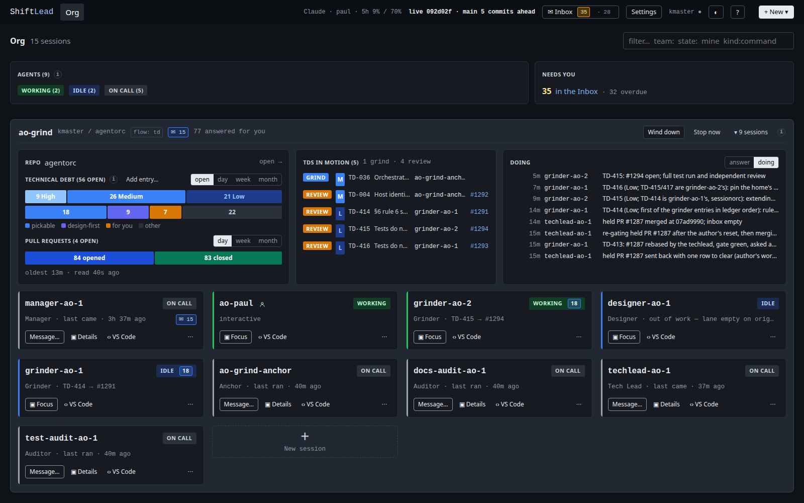

The live Org page from 2026-10-08 18:50, captured read-only. Both shots show the same data: the "after" applies the proposed changes to that captured page, so only the design differs.

Both controls leave the title row. The filter box takes mine and kind:command next to team: and state:, and its placeholder lists them.
Every facet header reserves the height of the day/week/month picker, and the phase bar and the opened/closed blocks are drawn at one height (26px). The repo facet's bars get the same height.
"in urgency order, as the cards sort · a pill filters the page to that state" becomes the tooltip on an i beside AGENTS. Needs you also drops its "0 answer needed" row at zero, as asked you already does.
One button with two choices, Session and Shell. A team's own sessions still start from its + card.
The header keeps the name, host / repo, a flow: td chip (its stages in the tooltip, linked to Settings), the marks, Wind down, Stop now, the fold and the i. Dropped from the header: the second "9 sessions", the flow strip, and the flow dropdown (Settings already has the same picker per team). Members…, "defined in … changed by PR", Open file and not concluded: move into the i panel under a Definition line. flow changed · Apply stays on the header because it asks you to act.
The team's unread total sits beside the flow chip in both states. TD-071 drew it only while folded; that rule is reversed.
Its full text becomes an i on TECHNICAL DEBT. Each grinder and designer card shows how many entries its lane holds, attached to its state pill, in the repo bar's colour for that kind: blue for pickable, purple for design-first. Inside the pill it can't be mistaken for the ✉ mail chip. A soft tint means the member is busy or holds something. It turns solid when the member has said it is out of work while entries wait in its lane, which is the case to act on. No count at 0.
In the shot, grinder-ao-1 is IDLE with 18 but stays soft: it holds TD-414, whose PR is in review. Being idle alone isn't a problem; being out of work with entries waiting is.
Why the designer shows no count here: the repo bar's purple 9 aren't designer work. All 9 are design-first entries that are already designed and wait on their build (TD-230 on TD-233, TD-380 on TD-384, TD-247 on TD-259…); the bar's tooltip says 9 design-first · 0 in ao-grind's lanes · 9 wait on a build. So the card is right, and the bar is the misleading part: see the next change.
Today the purple segment counts both. The segment keeps purple for entries the designer can take, which is the same number as the designer card's count. The designed entries waiting on a build get their own muted segment and legend entry. Then the bar and the cards agree, and a purple 9 on the bar means 9 for the designer.
"your session in ao-grind" becomes "New session". The team card is the context.
Section labels never wrap. Where the header runs out of room, the window picker drops to its own line on the right, not the label.
The label and the rows say it.
While one team is live, the rollup keeps Agents and Needs you; its TDs-in-motion and PR facets come back with a second live team.
dc-grind's "no repo here" and "nothing claimed" boxes go; its header and Start stay.
Repo and Doing get more width, TDs in motion less (1.15 : 0.85 : 1.2). The cost: TD titles in that facet truncate sooner; the reference and holder stay whole.